timweb manual
A browser PlayStation TIM converter and VRAM layout editor. Open timweb. The numbered labels in each screenshot match the numbered notes under it.
1. Getting started
Everything runs in the page: nothing is uploaded anywhere, and the whole tool is one HTML file you can save and open offline.
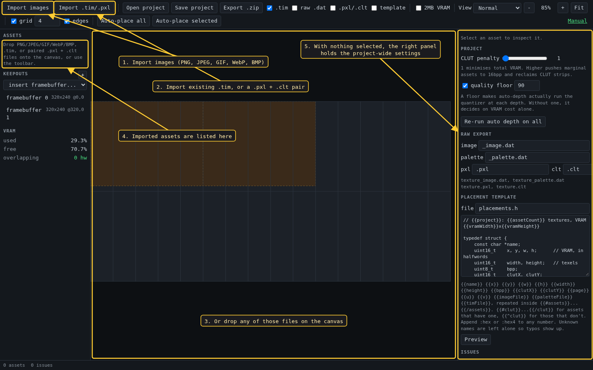
- Import PNG, JPEG, GIF, WebP or BMP, anything the browser can decode.
- Import an existing
.tim, or a split.pxl+.cltpair (matched by base name). A TIM is placed at the VRAM position written in it. - Dropping files on the canvas does the same as either button.
- Each import becomes an asset in this list.
- While nothing is selected the right panel shows the settings for the whole project.
2. The window
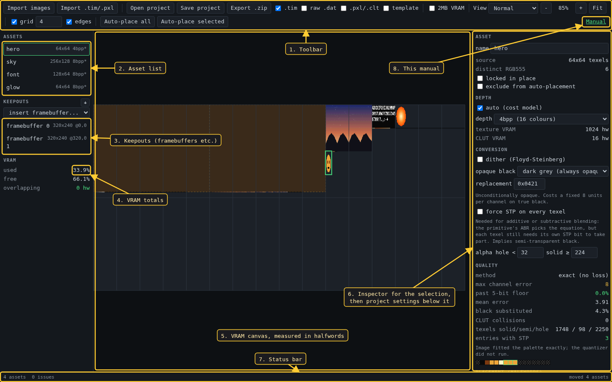
- Toolbar: import, project files, export formats, 2MB VRAM, view mode, zoom, snapping and auto-placement.
- Assets. The text on the right is size, depth, and a
*when the depth was chosen automatically. - Keepouts: VRAM that auto-placement must leave alone. The two framebuffers are keepouts.
- How much of VRAM is used, free, and claimed twice.
- The canvas is VRAM itself. Every coordinate is in 16-bit halfwords, the unit the GPU uses for VRAM, not in texels.
- The inspector shows whatever is selected, with the project settings underneath.
- Status bar: asset and issue counts, cursor position, last action.
- The link to this manual.
3. The VRAM canvas
Click to select, drag to move. The arrow keys nudge the selection by one halfword, Shift+arrow by 16, and Delete removes it. Pan with the middle button or Shift+drag; the wheel zooms about the cursor.
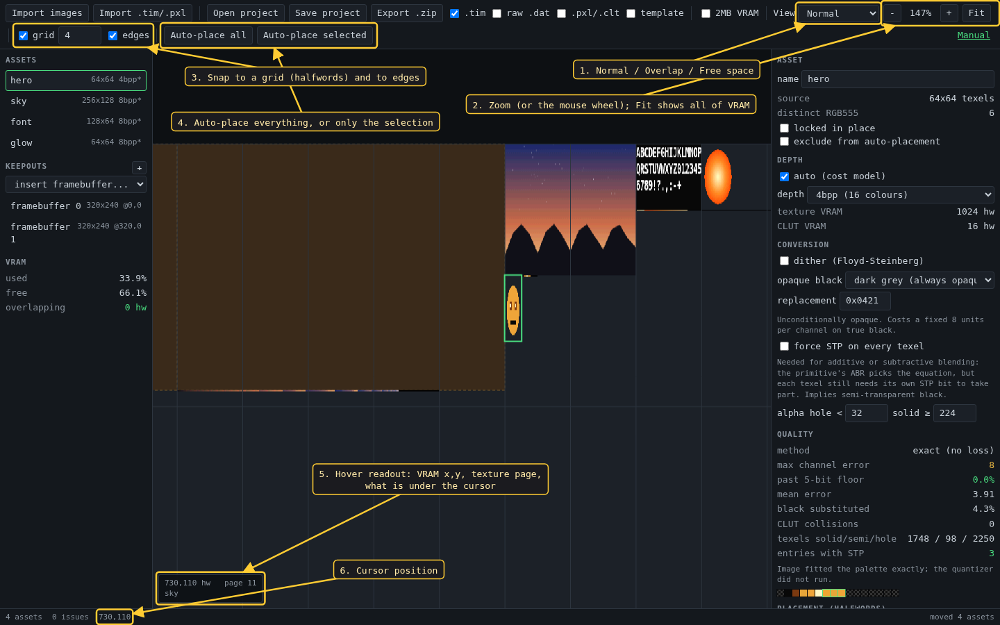
- View: Normal draws the textures, Overlap paints anything claimed twice, Free space shows what is left.
- Zoom buttons; Fit brings all of VRAM back into view.
- Snapping while dragging: to a grid of the given size in halfwords, and to the edges of other placements.
- Auto-place all packs every asset that is neither locked nor excluded around the keepouts and pinned assets. Auto-place selected moves only the selection.
- The hover readout: VRAM coordinate in halfwords, texture page number, and what sits under the cursor (an asset,
reserved,free, or-OVERLAP-). - The same coordinate in the status bar.
4. Keepouts and framebuffers
A keepout is a named rectangle of reserved VRAM. A framebuffer is just a keepout with a standard size, so side-by-side, stacked or padded layouts are a matter of moving rectangles.
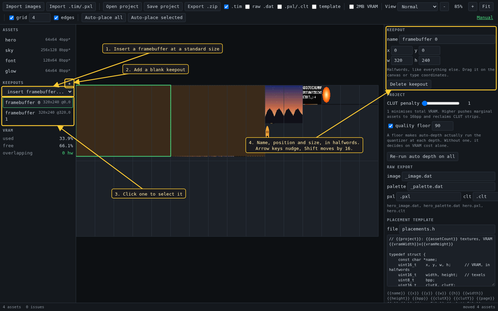
- Insert a framebuffer at 320x240, 320x256, 368x240, 512x240 or 640x480.
- + adds a blank keepout to size by hand.
- Click a keepout to select it, or click it on the canvas.
- Its name, position and size, in halfwords. Drag it on the canvas or type coordinates.
5. Depth
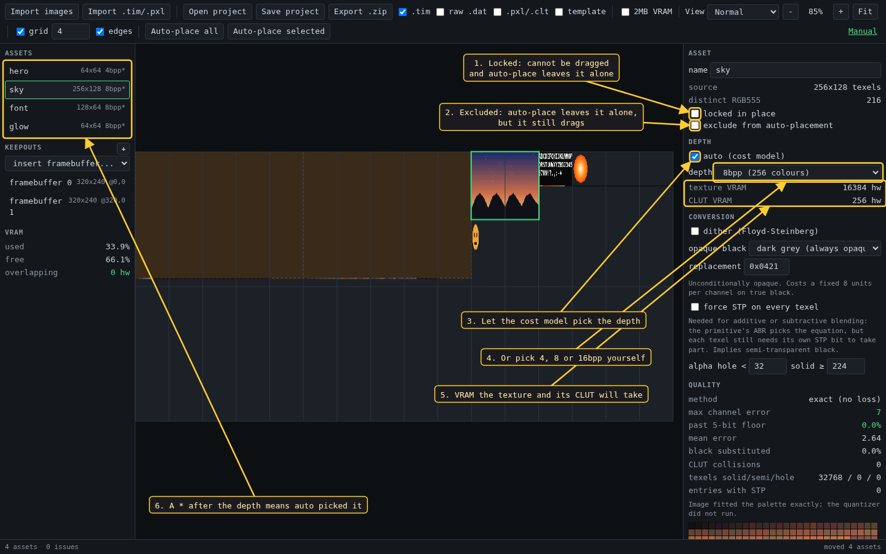
- Locked pins the asset: it cannot be dragged and auto-placement will not move it.
- Excluded only keeps auto-placement off it; you can still drag it. The two flags are independent.
- Auto lets the cost model choose: the cheapest of 4bpp, 8bpp and 16bpp in texture plus CLUT VRAM, among the depths that pass the quality floor (see Project settings).
- Or choose the depth yourself, which turns auto off for that asset.
- What the texture and its CLUT will occupy, in halfwords.
- The
*in the list marks depths auto picked.
6. Conversion and transparency
Each texel ends up in one of three states, decided by its alpha: a hole (fully transparent), semi-transparent (STP bit set, blended by the primitive), or solid.
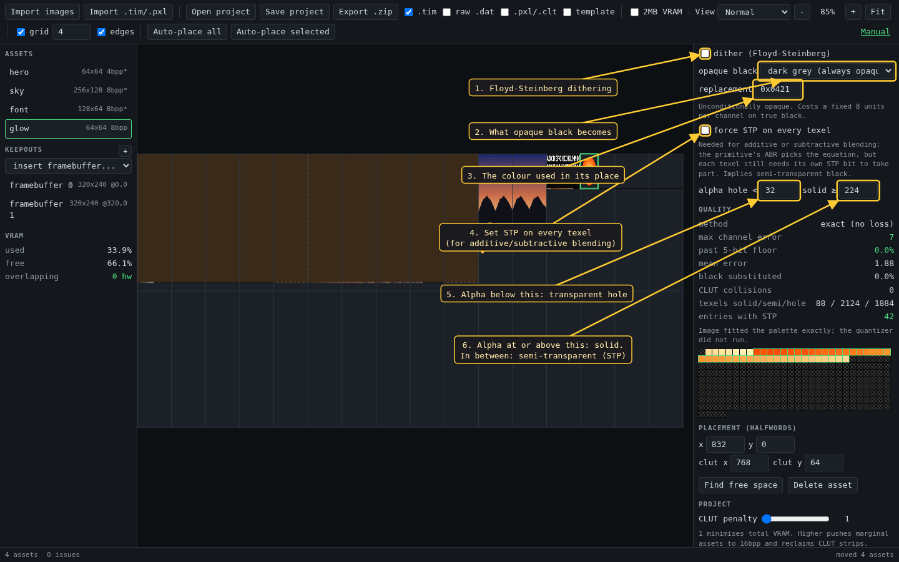
- Floyd-Steinberg dithering. Off by default: it speckles flat areas, and PS1 textures are usually magnified.
- Opaque black cannot stay
0x0000, because the GPU draws that value as transparent. Choose dark grey (always opaque) or semi-transparent black0x8000. - The colour used for opaque black in dark grey mode;
0x0421by default. - Set STP on every texel. Additive and subtractive blending only affect texels with STP set, whatever the primitive asks for.
- Alpha below this value becomes a hole.
- Alpha at or above this value is solid. Anything between the two is semi-transparent.
7. Reading the quality figures
Converting 8-bit colour to the PlayStation's 5 bits per channel can miss by up to 7 on its own, so these figures count any error past 7 against the palette.
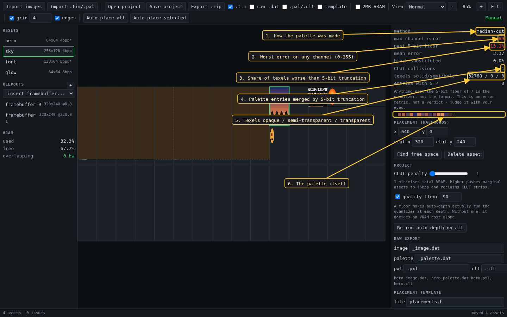
- How the palette was made:
exact (no loss)when the image already fits, otherwise the quantizer's name. - Worst error on any channel of any texel, 0 to 255. Green at 7 or below.
- Share of texels worse than the 7 the format costs anyway. Opaque black substituted by dark grey is counted separately, and holes are not graded.
- Palette entries that became identical after rounding to 5 bits.
- Texel count in each transparency state.
- The palette. Checkered entries are
0x0000, which the GPU draws as transparent.
These are error figures, not a verdict. A palette can score better and still look worse: judge the canvas with your eyes.
8. Palettes and CLUT rows
A TIM can carry several palettes as extra rows of its CLUT. timweb keeps all of them when importing and writes all of them back.
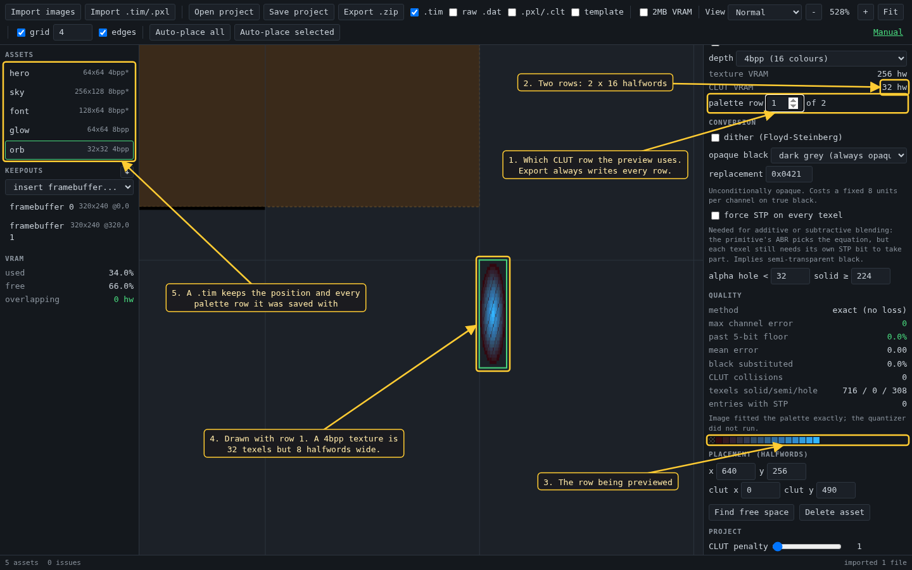
- The palette row the canvas preview uses. This only changes the preview; export always writes every row.
- A 4bpp CLUT row is 16 halfwords, so two rows take 32.
- The swatches follow the row being previewed.
- The same texture drawn with row 1. Note the width: a 4bpp texture 32 texels wide is 8 halfwords wide in VRAM.
- An imported TIM keeps its position and all its palette rows.
9. Placement
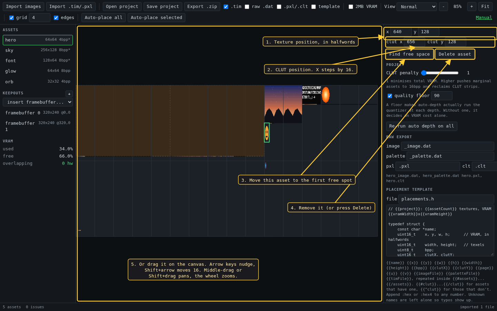
- The texture's position in halfwords.
- The CLUT's position. CLUT X must be a multiple of 16, so it moves in steps of 16.
- Find free space moves this asset to the first free spot that starts on a texture-page boundary, preferring one that does not cross the Y=256 line. A locked asset stays put.
- Delete asset removes it.
- Dragging on the canvas does the same as typing coordinates, with snapping.
10. Project settings
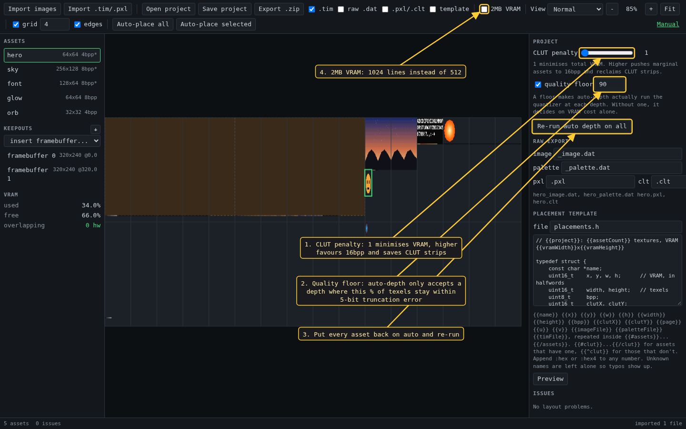
- CLUT penalty: how much auto-depth charges for CLUT VRAM compared with texture VRAM. At 1 it minimises total VRAM. Raising it pushes images near the boundary to 16bpp, which needs no CLUT.
- Quality floor, 0 to 100: auto-depth only picks a palettised depth where at least this percentage of texels stay within the 5-bit error. Without a floor it decides on VRAM cost alone.
- Changing either setting re-runs auto-depth on every asset still set to auto. Re-run auto depth on all also puts back on auto the assets whose depth you chose by hand.
- 2MB VRAM doubles the canvas to 1024 lines, for hardware with the second VRAM bank. The width does not change.
11. Checks
TIM files will happily describe layouts the GPU cannot use. timweb checks for overlaps, placements inside keepouts or outside VRAM, CLUT X alignment, textures that cross the Y=256 texture-page boundary, and textures too wide for one page to address.
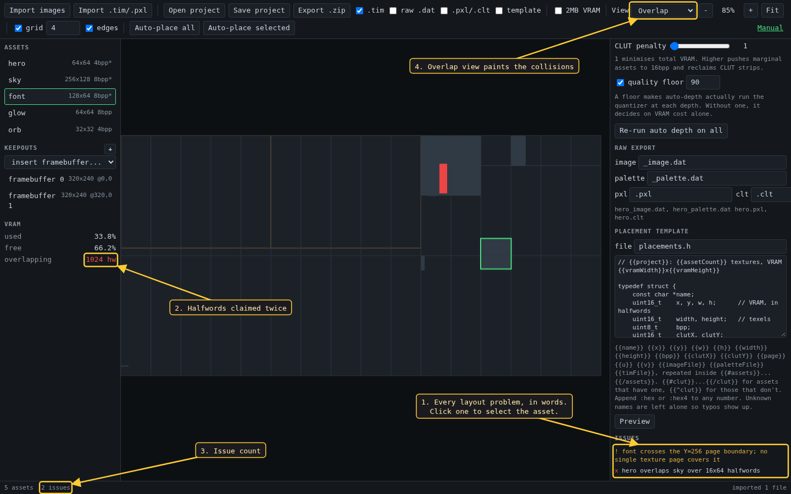
- The issue list, one line each.
- Halfwords claimed by more than one placement.
- The issue count.
- The Overlap view paints the collisions on the canvas.
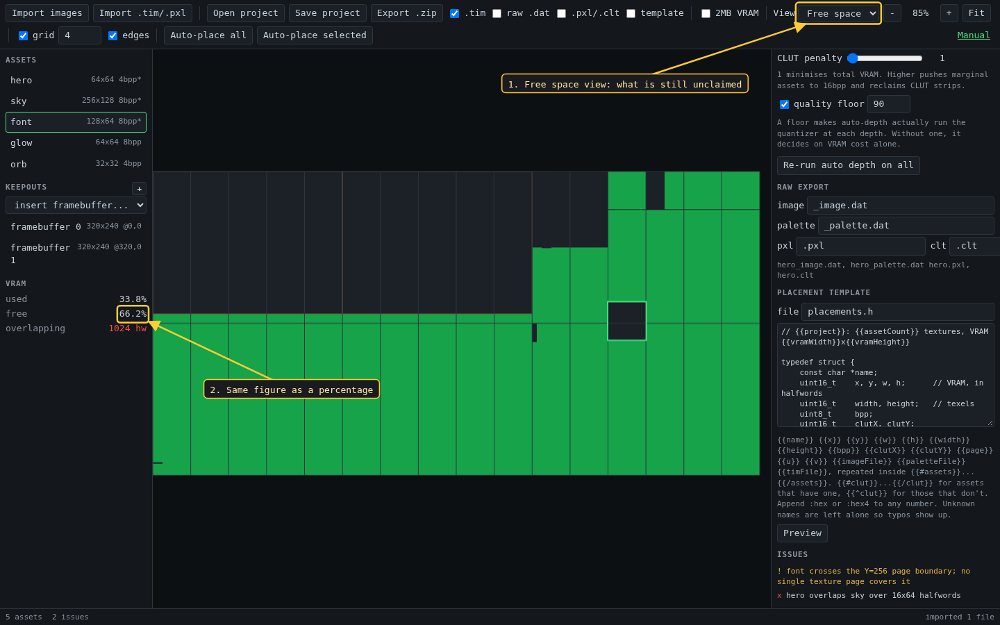
- The Free space view shows what is still unclaimed.
- The same, as a percentage.
12. Export
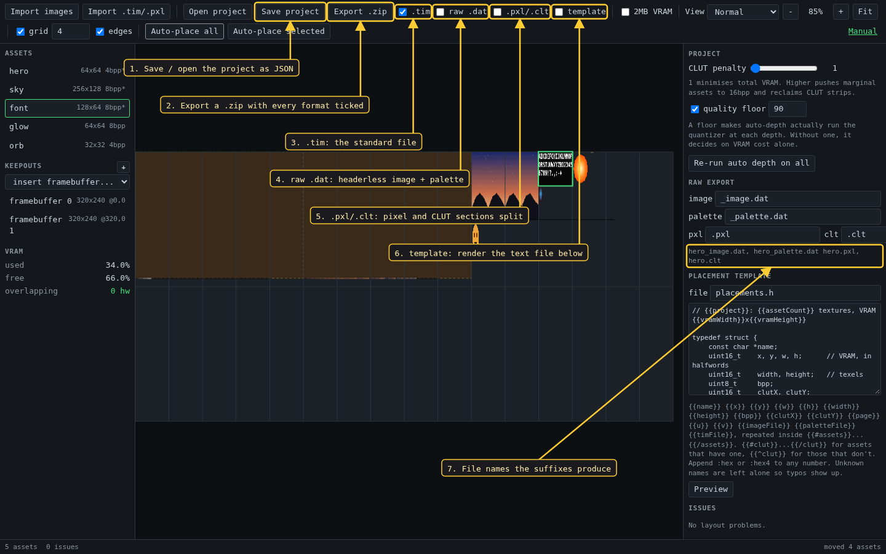
- Save project and Open project store the layout and settings as JSON. The images are not stored: re-import them and they attach to their entries by name.
- Export .zip writes every asset in each format ticked to its right.
.tim: standard TIM files.raw .dat: headerless image data and palette data in separate files, as ps1-bare-metal'sconvertImage.pywrites them..pxl/.clt: split TIMs, the pixel section and the CLUT section in two files.template: a text file generated from the placement template (next section).- The file names the suffixes above it produce, shown for the first asset. Two suffixes that collide are refused.
13. Placement templates
Raw .dat files carry no coordinates, so the template writes them out in whatever form your build needs: a C table, a list of upload calls, JSON.
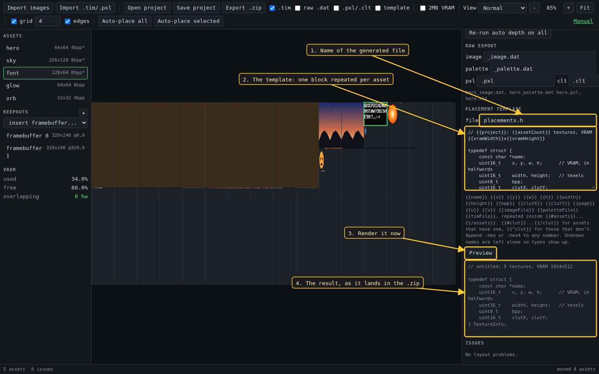
- The name the generated file gets inside the zip.
- The template.
{{#assets}}...{{/assets}}repeats once per asset; the placeholders are listed under the box. Append:hexor:hex4to a number. An unknown placeholder is left as written, so a typo shows up in the output. - Preview renders it now.
- The rendered text, as it will be exported.
x y w h are halfwords and width height are texels. Mixing them up is the classic way to get a VRAM upload wrong.